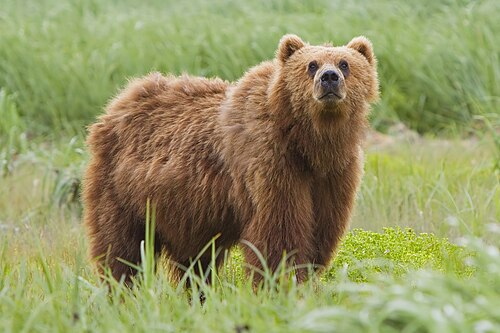

The brown bear (Ursus arctos) is native to parts of northern Eurasia and North America.
Its conservation status is currently "Least Concern."
There are many subspecies within the brown bear species,
including
the Atlas bear and the Himalayan brown bear.
Here are some bear species:
The following countries have the largest populations of brown bears:
